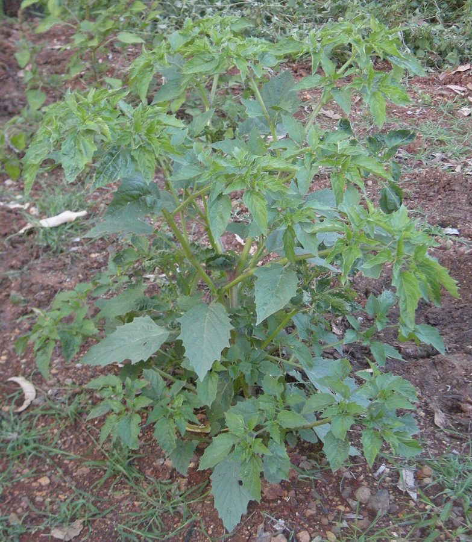

रसभरीWild Cape Gooseberry
Physalis minima · Solanaceae · FLR-0077

- Scientific name
- Physalis minima L.
- Family
- Solanaceae
- Hindi
- रसभरी
- Status here
- native
- IUCN
- not evaluated
When to look कब देखें
Expected mainly in July, August, September, October, November, December.
रसभरी / Wild Cape Gooseberry
Physalis minima L. — Solanaceae
रसभरी (जंगली रसभरी / सनबेरी / वाइल्ड गूसबेरी) — पूर्वी उत्तर प्रदेश के खेतों की सीमाओं, बगीचों की छांव, सब्जी के बगीचों (बाड़ी) और नदी के बलुआ किनारों पर उगने वाला एक छोटा, कोमल और शाकीय वार्षिक खरपतवार (small annual herb) है। यह मूल रूप से उष्णकटिबंधीय एशिया का निवासी है। इसकी सबसे बड़ी पहचान इसके लटके हुए 'लालटेन' जैसे दिखने वाले फल हैं, जो वास्तव में एक पतले, हवा से भरे कागजी आवरण (papery husk-enclosed berry) के अंदर बंद रहते हैं। यह आवरण फूल के बाहरी दल (calyx) के बड़े होने से बनता है। जब यह फल हरा होता है तो खट्टा होता है, लेकिन पूरी तरह पकने पर यह आवरण सूखा व भूरा हो जाता है और इसके अंदर मौजूद गोल पीली बेरी (ripe yellow berry) खाने में खट्टी-मीठी और बेहद स्वादिष्ट होती है। ग्रामीण क्षेत्रों में बच्चे इसे बड़े चाव से ढूंढते और खाते हैं। इसे बाजार में मिलने वाली बड़ी खेती वाली रसभरी (Physalis peruviana) से इसके छोटे फल और पत्तियों के कम रोएँदार होने के कारण आसानी से अलग किया जा सकता है।
Quick Identification त्वरित पहचान
| Feature | Description |
|---|---|
| Plant habit | Small, erect or sprawling, heavily branched annual herb, growing up to 20–50 cm high, with a hollow, soft green stem |
| Leaves | Alternately arranged, simple, thin, ovate, with coarsely toothed (serrate) or wavy margins |
| Flowers | Small (6–8 mm), bell-shaped, nodding, pale yellow or cream-white, with five dark brown spots at the base inside |
| Fruit | A round, smooth, fleshy yellow berry (10–12 mm), completely enclosed within an inflated, 5-angled, papery green-to-brown lantern-like husk |
| Taste | The ripe yellow fruit has a juicy, sweet and slightly sour tomato-like flavor |
Field tip: Look in shady garden borders or vegetable patches during September. Search for low, soft-stemmed green plants. Look underneath the leaf branches for hanging green papery "balloons" or lanterns. Peel open a dry brown balloon; you will find a bright yellow berry inside.
Morphology आकारिकी
Biometrics (typical measurements of mature plants in the northern Indian plains):
| Measurement | Range |
|---|---|
| Plant height | 20–50 cm |
| Leaf length | 3.0–7.0 cm |
| Flower diameter | 6–8 mm |
| Fruit husk (calyx) length | 15–20 mm |
| Berry diameter | 10–12 mm |
| Seed size | 1.5–2.0 mm |
Stem and Branches: Stems are soft, angular, slightly ribbed, green, easily broken, and split into two equal branches (dichotomous branching).
Foliage: Simple, alternate leaves. Leaf blades are thin, smooth or sparsely hairy, with unequal bases.
Flowers: Solitary, nodding, emerging from the leaf axils. The calyx is cup-shaped with 5 teeth, which expands rapidly after fertilization to form the lantern husk.
Fruit and Seeds: A round, many-seeded berry. The seeds are tiny, kidney-shaped, pale yellow-brown, with a warty or pitted surface.
Associated Species / Interactions संबंधित प्रजातियाँ
- Frugivorous Birds: The sweet ripe berries are consumed by bulbuls and babblers, which digest the pulp and disperse the seeds in their droppings.
- Pollinators: Visited by hoverflies, honeybees, and tiny sweat bees that feed on nectar and pollen in the bell-shaped flowers.
- Larval Host: Host to the leaf-eating caterpillars of the Potato Tuber Moth.
Pests and Diseases कीट और रोग
- Epilachna Beetle: Spotted ladybird beetles (Epilachna vigintioctopunctata) feed heavily on the leaves, leaving skeleton-like leaf networks.
- Fusarium Wilt: A soil-borne fungus that blocks water flow, causing the soft stems to wilt and collapse.
- Mosaic Virus: Transmitted by whiteflies, causing yellow mottled patterns and stunted leaves.
Traditional and Ethnobotanical Use पारंपरिक और नृवंशवनस्पति उपयोग
- Wild Foraged Snack: Children and rural herders forage the dry paper lanterns in autumn, popping the sweet-sour yellow berries directly into their mouths as a healthy wild snack.
- Ayurvedic Diuretic Remedy: The entire plant is harvested, dried, and boiled in water to prepare a traditional decoction, consumed in folk medicine to treat urinary tract infections and reduce body swelling.
- Anti-inflammatory Leaf Juice: The fresh leaves are crushed to extract juice, which is mixed with warm mustard oil and dropped into the ear to relieve earaches, or applied over skin boils.
- Culinary Chutney: In some rural households, large collections of the ripe wild berries are ground with green chillies, mint, and salt to make a tangy, sour chutney.
Expected Locally स्थानीय रूप से अपेक्षित
Not a field record. Written from published accounts for eastern Uttar Pradesh. No confirmed local sighting yet — if you have seen it, that is what the atlas needs.
अभी तक स्थानीय पुष्टि नहीं। यह विवरण प्रकाशित स्रोतों से है, किसी अवलोकन से नहीं।
A very common native annual herb in the Basti district, regularly observed in orchard edges, tomato fields, and home gardens (bari) in the Harraiya, Vikramjot, and Basti blocks. Elders state that the plant emerges automatically with the monsoon rains in July and matures by October. Children enjoy collecting the dry lanterns, popping the husks against their foreheads to make a small clicking sound before eating the fruit.
Distribution वितरण
Global range: Native to tropical Asia (India, southern China, Southeast Asia); widely naturalized across tropical Africa, Australia, and the Pacific Islands.
In India: Found throughout all plains and tropical states.
In Uttar Pradesh: Common state-wide in all agricultural and riverine districts.
In Basti district / eastern UP: Widespread across all blocks.
Research Questions शोध प्रश्न
Anyone can investigate these | कोई भी इन प्रश्नों की जाँच कर सकता है
- How many tiny seeds are typically packed inside a single mature Wild Cape Gooseberry in your village? — Collect 10 ripe berries and count the seeds of each to find the average (Citizen Science Activity for Kids!).
- Does the papery husk protect the berry from being eaten by insects before it is fully ripe? — Compare insect damage on husked versus peeled green berries.
- What is the ratio of green (unripe) to brown (ripe) husks on a single plant in late October? — Record weekly ripening ratios.
- Do Epilachna beetles prefer feeding on the leaves of Wild Cape Gooseberry over cultivated tomato leaves? — Conduct food choice tests.
- Does the germination rate of seeds drop when collected from unripe green berries compared to fully ripe yellow berries? / क्या पूरी तरह से पकी पीली बेरी की तुलना में अधपके हरे फल से एकत्र किए गए बीजों की अंकुरण दर कम हो जाती है? — Conduct comparative planting trials.
Similar Species मिलती-जुलती प्रजातियाँ
| Species | How to tell apart | comparison |
|---|---|---|
| Cultivated Cape Gooseberry (Physalis peruviana) | Much larger plant; leaves are thick, velvety-hairy; fruit is much larger (15–20 mm) and golden-orange | रसभरी (बड़ी) — मखमली पत्ते, बड़ा पीला-नारंगी फल |
| Ashwagandha (Withania somnifera) | Erect woody shrub; leaves are thick; flowers are green-yellow; fruit is a red berry in a tight husk | अश्वगंधा — झाड़ीदार पौधा, चमकीली लाल बेरी |
| Black Nightshade (Solanum nigrum) | Flowers are star-like; berries are exposed (lacks the papery lantern husk); black when ripe | मकोय — छोटे बिना कवर के फल, पकने पर काले |
Field rule: Small branched annual herb with soft stems, pale yellow bell flowers with dark inner spots, and round yellow edible berries completely enclosed in papery, 5-angled green-brown lantern husks, is the Wild Cape Gooseberry.
Taxonomy & Classification वर्गीकरण
Original description. Carl Linnaeus described the Wild Cape Gooseberry as Physalis minima in 1753 in his Species Plantarum (Vol. 1, p. 183). The type locality was listed as India. The genus name Physalis is derived from the Greek physa, meaning bladder or bellows, referring to the inflated papery husk. The specific name minima is Latin for smallest.
Subspecies. Monotypic — no subspecies are currently recognised.
Family and order placement. Placed in the order Solanales, family Solanaceae (nightshade or potato family), subfamily Solanoideae, tribe Physalideae.
Phylogenetic notes. Physalis minima belongs to a specialized group of Solanaceae that evolved calyx accrescence (expansion of the calyx after fertilization) as a protective structural defense for the ripening fruit against environmental stress and insect pests.
IUCN status rationale. Not evaluated (NE) by the IUCN Red List. It has a secure, stable, and widespread population across tropical Asia.
Photo Gallery फोटो गैलरी
References संदर्भ
- Linnaeus, C. (1753). Species Plantarum. Laurentii Salvii, Holmiae, Vol. 1, p. 183. [original description]
- Kirtikar, K. R. & Basu, B. D. (1935). Indian Medicinal Plants. Vol. III. Lalit Mohan Basu, Allahabad.
- Waterfall, U. T. (1958). A Taxonomic Study of the Genus Physalis in North America. Rhodora (includes comparisons to Asian species).
- GBIF Occurrence Data — Physalis minima, India (2010–2025).
- World Register of Marine and Freshwater Species (2024). Physalis minima details.
- Botanical Survey of India (2024). Flora of India — Physalis minima records.
Source file: species/flora/weeds/wild_cape_gooseberry.md